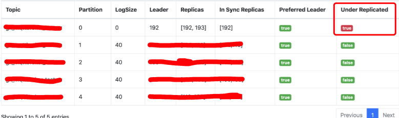
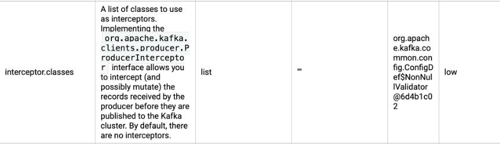
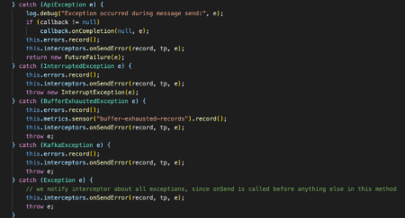
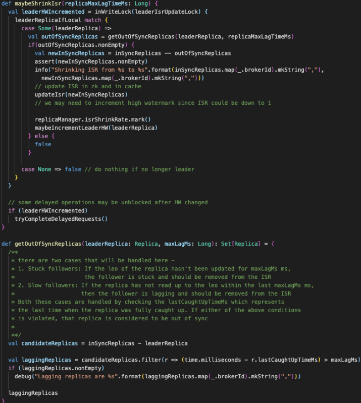
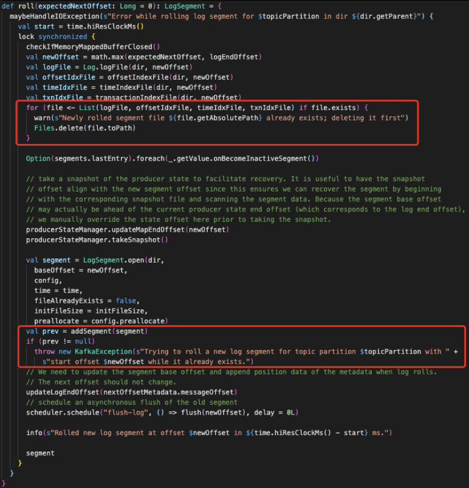
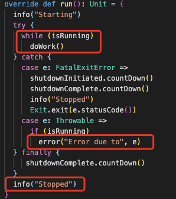
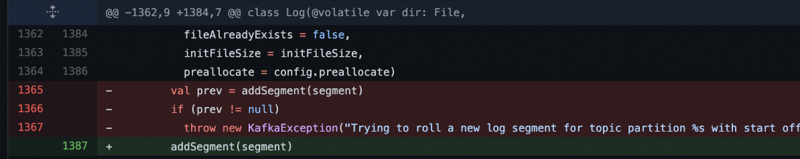

kafka部分topic出现消息丢失
背景
有同学反馈kafka某个topic有消息丢失（消费比生产的要少），丢失率大概20%
排查
出现问题的topic的replication-factor为2，partition数量为5，该topic状态如下：

有一个topic处于Under Replicated状态，ISR只有1个，193节点被踢掉之后没有进来，而且也没替换为其他节点。
首先看producer有没有报错，kafka 2.0中producer发送方式为async+interceptor方式，通过interceptor.class来指定自定义拦截器

所有的错误都会回调interceptor

通过增加interceptor并在onSendError打印错误日志发现有报错：
ERROR ninebot.iot.hub.KafkaTest 100 - send error :Messages are rejected since there are fewer in-sync replicas than required.
org.apache.kafka.common.errors.NotEnoughReplicasException: Messages are rejected since there are fewer in-sync replicas than required.
报错的直接原因为：partition-0只有1个replica，少于配置的2个，所有发到这个partition的消息会被拒绝
在192节点上发现有如下日志：
2021-07-27 17:41:47,159 INFO kafka.cluster.Partition: [Partition test-7 broker=192] Shrinking ISR from 192,193 to 192
2021-07-27 17:51:07,551 ERROR kafka.server.ReplicaManager: [ReplicaManager broker=192] Error processing append operation on partition test-7
org.apache.kafka.common.errors.NotEnoughReplicasException: Number of insync replicas for partition test-7 is [1], below required minimum [2]
进一步搜索Shrinking ISR from日志发现当时有大量的partition都将193节点踢掉。
查看kafka的代码发现，shrink isr的条件是follower的lastCaughtUpTimeMs超时

查看193节点日志发现当时有个报错
2021-07-27 17:41:11,547 INFO kafka.server.epoch.LeaderEpochFileCache: Updated PartitionLeaderEpoch. New: {epoch:15, offset:201}, Current: {epoch:-1, offset:-1} for Partition: test-1. Cache now contains 0 entries.
2021-07-27 17:41:11,549 WARN kafka.log.Log: [Log partition=test-1, dir=/data/kafka] Newly rolled segment file /data/kafka/test-1/00000000000000000201.log already exists; deleting it first
2021-07-27 17:41:11,549 WARN kafka.log.Log: [Log partition=test-1, dir=/data/kafka] Newly rolled segment file /data/kafka/test-1/00000000000000000201.index already exists; deleting it first
2021-07-27 17:41:11,549 WARN kafka.log.Log: [Log partition=test-1, dir=/data/kafka] Newly rolled segment file /data/kafka/test-1/00000000000000000201.timeindex already exists; deleting it first
2021-07-27 17:41:11,550 ERROR kafka.server.ReplicaFetcherThread: [ReplicaFetcher replicaId=193, leaderId=192, fetcherId=2] Error due to
org.apache.kafka.common.KafkaException: Error processing data for partition test-1 offset 201
at kafka.server.AbstractFetcherThread$$anonfun$processFetchRequest$2$$anonfun$apply$mcV$sp$1$$anonfun$apply$2.apply(AbstractFetcherThread.scala:207)
at kafka.server.AbstractFetcherThread$$anonfun$processFetchRequest$2$$anonfun$apply$mcV$sp$1$$anonfun$apply$2.apply(AbstractFetcherThread.scala:172)
at scala.Option.foreach(Option.scala:257)
at kafka.server.AbstractFetcherThread$$anonfun$processFetchRequest$2$$anonfun$apply$mcV$sp$1.apply(AbstractFetcherThread.scala:172)
at kafka.server.AbstractFetcherThread$$anonfun$processFetchRequest$2$$anonfun$apply$mcV$sp$1.apply(AbstractFetcherThread.scala:169)
at scala.collection.mutable.ResizableArray$class.foreach(ResizableArray.scala:59)
at scala.collection.mutable.ArrayBuffer.foreach(ArrayBuffer.scala:48)
at kafka.server.AbstractFetcherThread$$anonfun$processFetchRequest$2.apply$mcV$sp(AbstractFetcherThread.scala:169)
at kafka.server.AbstractFetcherThread$$anonfun$processFetchRequest$2.apply(AbstractFetcherThread.scala:169)
at kafka.server.AbstractFetcherThread$$anonfun$processFetchRequest$2.apply(AbstractFetcherThread.scala:169)
at kafka.utils.CoreUtils$.inLock(CoreUtils.scala:251)
at kafka.server.AbstractFetcherThread.processFetchRequest(AbstractFetcherThread.scala:167)
at kafka.server.AbstractFetcherThread.doWork(AbstractFetcherThread.scala:114)
at kafka.utils.ShutdownableThread.run(ShutdownableThread.scala:82)
Caused by: org.apache.kafka.common.KafkaException: Trying to roll a new log segment for topic partition test-1 with start offset 201 while it already exists.
at kafka.log.Log$$anonfun$roll$2.apply(Log.scala:1498)
at kafka.log.Log$$anonfun$roll$2.apply(Log.scala:1465)
at kafka.log.Log.maybeHandleIOException(Log.scala:1842)
at kafka.log.Log.roll(Log.scala:1465)
at kafka.log.Log.kafka$log$Log$$maybeRoll(Log.scala:1450)
at kafka.log.Log$$anonfun$append$2.apply(Log.scala:858)
at kafka.log.Log$$anonfun$append$2.apply(Log.scala:752)
at kafka.log.Log.maybeHandleIOException(Log.scala:1842)
at kafka.log.Log.append(Log.scala:752)
at kafka.log.Log.appendAsFollower(Log.scala:733)
at kafka.cluster.Partition$$anonfun$doAppendRecordsToFollowerOrFutureReplica$1.apply(Partition.scala:606)
at kafka.utils.CoreUtils$.inLock(CoreUtils.scala:251)
at kafka.utils.CoreUtils$.inReadLock(CoreUtils.scala:257)
at kafka.cluster.Partition.doAppendRecordsToFollowerOrFutureReplica(Partition.scala:593)
at kafka.cluster.Partition.appendRecordsToFollowerOrFutureReplica(Partition.scala:613)
at kafka.server.ReplicaFetcherThread.processPartitionData(ReplicaFetcherThread.scala:127)
at kafka.server.ReplicaFetcherThread.processPartitionData(ReplicaFetcherThread.scala:40)
at kafka.server.AbstractFetcherThread$$anonfun$processFetchRequest$2$$anonfun$apply$mcV$sp$1$$anonfun$apply$2.apply(AbstractFetcherThread.scala:186)
... 13 more
2021-07-27 17:41:11,550 INFO kafka.server.ReplicaFetcherThread: [ReplicaFetcher replicaId=193, leaderId=192, fetcherId=2] Stopped
调用过程如下：
AbstractFetcherThread.processFetchRequest
→ ReplicaFetcherThread.processPartitionData
→ Partition.appendRecordsToFollowerOrFutureReplica
→ Log.maybeRoll
→ Log.roll
Log.roll代码如下：

从日志看出，首先有3个delete操作
Newly rolled segment file /data/kafka/test-1/00000000000000000201.log already exists; deleting it first
Newly rolled segment file /data/kafka/test-1/00000000000000000201.index already exists; deleting it first
Newly rolled segment file /data/kafka/test-1/00000000000000000201.timeindex already exists; deleting it first
然后报错
Trying to roll a new log segment for topic partition test-1 with start offset 201 while it already exists.
说明删除失败，怀疑当时文件正在打开写入，导致删除失败
服务器文件情况如下：
# ls /data/kafka/test-1/ -l
total 4
-rw-r--r-- 1 kafka kafka 10485760 Jul 27 17:41 00000000000000000201.index
-rw-r--r-- 1 kafka kafka 0 Jul 27 17:41 00000000000000000201.log
-rw-r--r-- 1 kafka kafka 10485756 Jul 27 17:41 00000000000000000201.timeindex
-rw-r--r-- 1 kafka kafka 11 Jul 27 17:41 leader-epoch-checkpoint
为什么一个ReplicaFetcherThread报错会导致25个partition剔除193？
ReplicaFetcherManager的父类AbstractFetcherManager中有一个变量
private[server] val fetcherThreadMap = new mutable.HashMap[BrokerIdAndFetcherId, AbstractFetcherThread]
这个map会以brokerId和fetcherId为key来存放ReplicaFetcherThread，可以认为1个source broker对应1个fetcher thread，这个fetcher thread中会负责所有在source broker上partition的同步，ReplicaFetcherThread的报错导致整个线程退出，

然后会影响所有在source broker上的partition同步，导致这些partition同时踢掉193
为什么当时会删除失败？
发现kafka官方的jira上已经有提过该bug
https://issues.apache.org/jira/browse/KAFKA-6388
并且该bug已经修复
https://github.com/apache/kafka/pull/6006/commits/f39a9f533f7bedf28dbaca7644b99808e163ea4d
将prev检查及抛出异常代码去掉
升级kafka，从2.0到2.1，从2.1开始该bug已经修复 